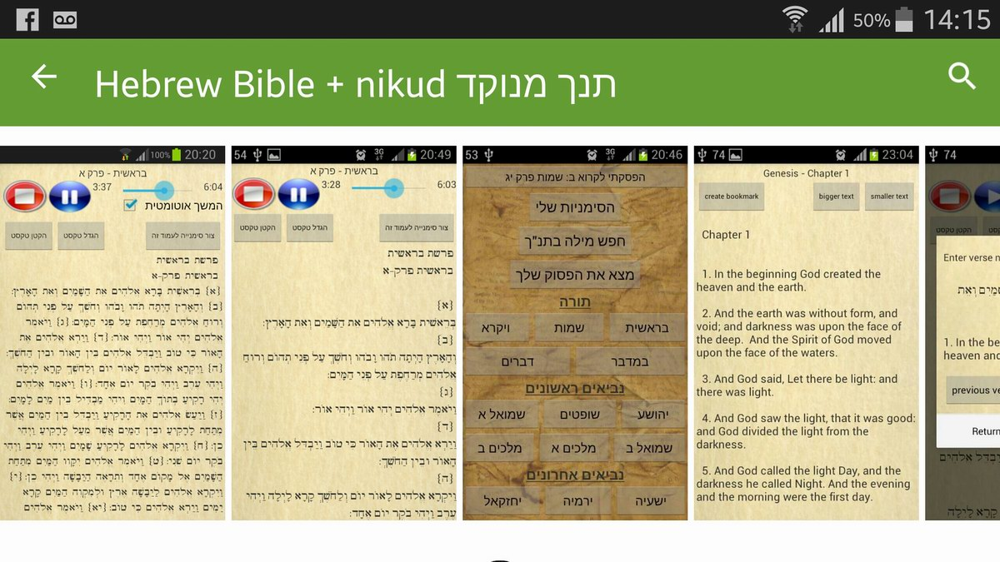
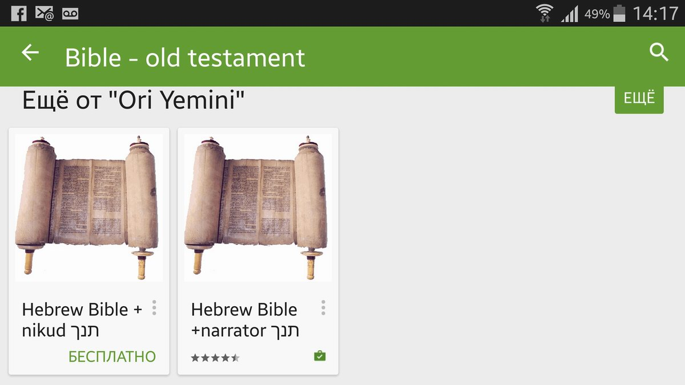

ТАНАХ для мобильника - хороший подарок к Песаху
Для тех, кто изучает иврит Писания и сами Еврейские Писания на языке оригинала - хороший подарок к Песаху. ТАНАХ (т.н. Ветхий Завет). Текст с огласовками, удобным традиционным шрифтом и изменяемой величиной фонтов, с возможностью поиска на иврите и ОЗВУЧКОЙ ВСЕГО ТЕКСТА ТАНАХа на иврите. Включаете аудио запись и следите за ней по тексту. Дойдя до конца главы, автомтически включается следующая и страница перелистывается к соответствующему тексту.
КЛАССНЫЙ ТАНАХ для мобильника - хороший подарок к Песаху и лучший навигатор для пустыни
Программа очень проста и без выкрутасов. Только самое необходимое. Советую вам для начала скачать бесплатную версию. В ней для примера озвучена только самая первая книга "БЕРИШИТ" (Бытие). В платной - соответственно озвучен весь текст ТАНАХа. Очень удобно в ней то, что ползунок аудио плеера можно передвигать для прослушивания с интересующего вас места. При установке опции "автоматический переход к следующей главе" не только начинается чтение соответствующей главы, но и текст также перелистывается на нее. Так что очень удобно, при прсслушивании, следить по тексту.
краткий видео обзор программы см. здесь
1. озвучка всего текста ТАНАХа
2. наличие поиска на иврите
3. возможность скопировать и вставить в любой текстовый редактор ивритского текста с огласовками
4. меню программы можно переключить на английкий язык
5. взможность настроить величину букв как вам удобно (до очень крупных)
6. бесплатная версия содержит аудио чтение только для книги Берешит (Бытие). Она таже не содержит некоторых функций, + наличие рекламы.
картинки кликабельны


О программе можно посмотреть также здесь
Напишите в комментариях, какими библейскими программами вы пользуетесь.